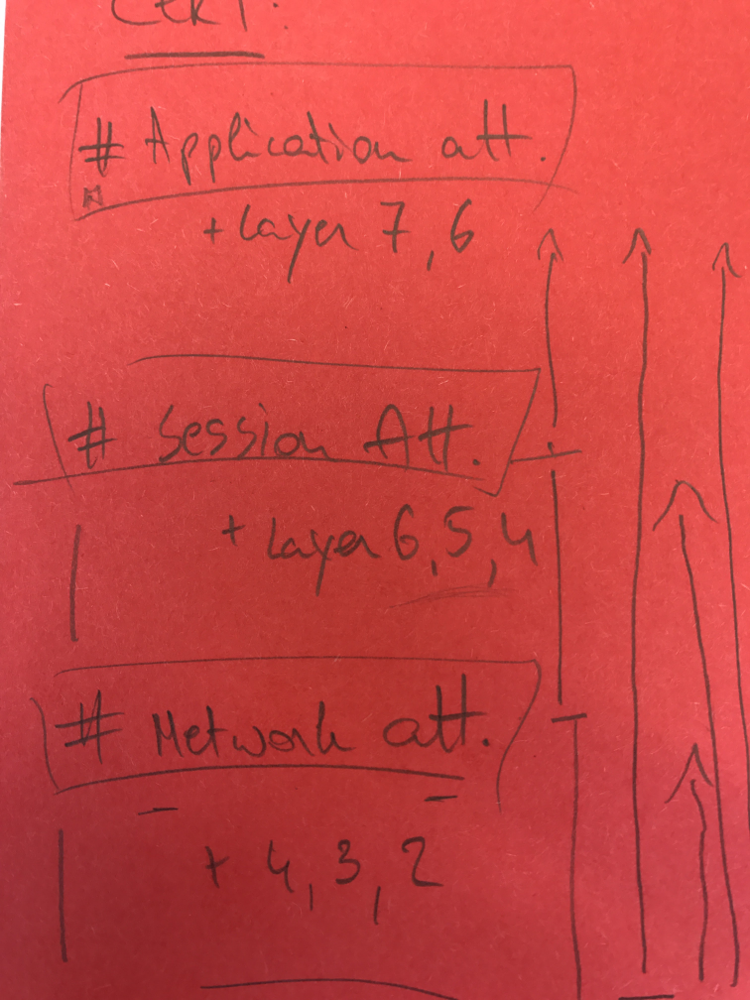

Шпаргалка по отказу в обслуживании¶
Введение¶
Эта шпаргалка описывает методологию обработки атак типа «отказ в обслуживании» (DoS) на разных уровнях. Она также служит платформой для дальнейшего обсуждения и анализа, поскольку существует множество различных способов проведения DoS-атак.
Основы¶
Поскольку антиDoS-меры не могут быть одношаговыми решениями, ваши разработчики и архитекторы приложений/инфраструктуры должны тщательно разрабатывать DoS-решения. Они должны помнить, что «доступность» является базовой частью триады ЦРУ (CIA).
Помните: если любая часть вычислительной системы в потоке взаимодействия не функционирует корректно, ваша инфраструктура страдает. Успешная DoS-атака препятствует доступности экземпляров или объектов системы и в конечном счёте может сделать всю систему недоступной.
Для обеспечения устойчивости систем к DoS-атакам мы настоятельно рекомендуем провести тщательный анализ компонентов в вашем инвентаре с точки зрения функциональности, архитектуры и производительности (то есть с точки зрения приложения, инфраструктуры и сети).

Инвентаризация DoS-системы должна выявлять потенциальные места, где DoS-атаки могут создавать проблемы, и освещать любые единые точки отказа в системе — от ошибок программирования до исчерпания ресурсов. Она должна дать чёткое представление о том, какие проблемы стоят на кону (например, узкие места и т.д.). Для решения проблем необходимо твёрдое понимание своей среды для разработки подходящих механизмов защиты. Они могут быть согласованы с:
- Вариантами масштабирования (вертикальное = внутренние аппаратные компоненты, горизонтальное = количество полных компонентов).
- Существующими концептуальными/логическими техниками (например, применение мер избыточности, балкхединг и т.д. — расширяющих ваши внутренние возможности).
- Анализом затрат применительно к вашей ситуации.
Данный документ использует конкретную структуру руководства от CERT-EU для анализа этой темы, которую вам, возможно, потребуется изменить в зависимости от вашей ситуации. Это не полный подход, но он поможет вам создать фундаментальные блоки для построения антиDoS-концепций, соответствующих вашим потребностям.
Анализ поверхностей атаки DoS¶
В этой шпаргалке мы используем классификацию DDOS, задокументированную CERT-EU, для изучения уязвимостей DoS-системы. Она использует семиуровневую модель OSI и фокусируется на трёх основных поверхностях атаки: Приложение, Сессия и Сеть.
1) Обзор потенциальных DoS-уязвимостей¶
Важно понимать, что при разработке устойчивого к DoS решения необходимо учитывать каждую из этих трёх категорий атак:
Атаки на приложение направлены на недоступность приложений путём исчерпания ресурсов или их функциональной неработоспособности.
Атаки на сессии (или протокол) направлены на исчерпание серверных ресурсов или ресурсов промежуточного оборудования, например брандмауэров и балансировщиков нагрузки.
Сетевые (или объёмные) атаки направлены на насыщение пропускной способности сетевого ресурса.
Обратите внимание, что уровни 1 и 2 модели OSI не включены в эту классификацию, поэтому теперь обсудим их и применимость DoS к ним.
Физический уровень состоит из технологий передачи сетевого оборудования. Это фундаментальный уровень под логическими структурами данных функций более высокого уровня в сети. Типичные DoS-сценарии, связанные с физическим уровнем, включают уничтожение системы, препятствование и неисправность. Например, пожилая женщина из Грузии перерезала подземный кабель, что привело к потере интернета во всей Армении.
Уровень данных — это протокольный уровень, передающий данные между смежными сетевыми узлами в глобальной сети (WAN) или между узлами в одном сегменте локальной сети (LAN). Типичные DoS-сценарии — MAC flooding (атаки на таблицы MAC-адресов коммутаторов) и ARP poisoning (отравление ARP).
При атаках MAC flooding коммутатор наполняется пакетами с разными исходными MAC-адресами. Цель атаки — исчерпать ограниченную память коммутатора, используемую для хранения таблицы трансляции MAC-адресов и физических портов (таблица MAC), что приводит к удалению действительных MAC-адресов и переходу коммутатора в режим аварийного переключения, когда он становится сетевым концентратором. В этом случае все данные пересылаются на все порты, что приводит к утечке данных.
[Дополнения к шпаргалке в будущем: Влияние в контексте DoS и компактное исправление]
При атаках ARP poisoning злоумышленник отправляет поддельные ARP-сообщения (протокол разрешения адресов) по сети. Если MAC-адрес злоумышленника связан с IP-адресом легитимного устройства в сети, злоумышленник может перехватывать, изменять или останавливать данные, предназначенные для целевого IP-адреса. Протокол ARP специфичен для локальной сети и может вызвать DoS в проводной связи.
Технология фильтрации пакетов может использоваться для проверки транзитных пакетов с целью выявления и блокировки нарушающих ARP-пакетов. Другой подход — использование статических ARP-таблиц, но их трудно поддерживать.
Атаки на приложение¶
Атаки на прикладном уровне обычно делают приложения недоступными, исчерпывая системные ресурсы или делая их функционально неработоспособными. Эти атаки не обязаны потреблять сетевую пропускную способность для эффективности. Вместо этого они создают операционную нагрузку на сервер приложений таким образом, что сервер становится недоступным, непригодным для использования или нефункциональным. Все атаки, использующие уязвимости в стеке протоколов уровня 7 OSI, обычно классифицируются как атаки на приложение. Они наиболее сложны для идентификации/нейтрализации.
[Дополнения в будущем: Перечислить все атаки по категориям. Поскольку нельзя сопоставить меры исправления один к одному с вектором атаки, сначала нужно перечислить их перед обсуждением шагов.]
Медленные HTTP-атаки доставляют HTTP-запросы очень медленно и фрагментарно, по одному. До полной доставки HTTP-запроса сервер будет удерживать ресурсы в ожидании недостающих входящих данных. В какой-то момент сервер достигнет максимального пула одновременных соединений, что приведёт к DoS. С точки зрения злоумышленника, медленные HTTP-атаки дёшевы в выполнении, поскольку требуют минимальных ресурсов.
Концепции проектирования программного обеспечения¶
- Использование дешёвой в ресурсах валидации в первую очередь: Нужно как можно скорее снизить нагрузку на эти ресурсы. Более ресурсоёмкая (CPU, память и пропускная способность) валидация должна выполняться после.
- Применение постепенной деградации: Это основная концепция при проектировании приложений для ограничения влияния DoS. Необходимо поддерживать некоторый уровень функциональности при отказе частей системы или приложения. Одна из главных проблем DoS в том, что она вызывает внезапные и резкие сбои приложений в системе. Отказоустойчивый дизайн позволяет системе или приложению продолжать предполагаемую работу, возможно, на сниженном уровне, вместо полного отказа.
- Предотвращение единых точек отказа: Обнаружение и предотвращение единых точек отказа (SPOF) является ключевым для устойчивости к DoS. Большинство DoS-атак предполагают, что система имеет SPOF, которые выйдут из строя из-за перегруженных систем. Рекомендуем применять stateless-компоненты, использовать избыточные системы, создавать перегородки (bulkheads) для предотвращения распространения сбоев через инфраструктуру и убеждаться, что системы могут работать при отказе внешних сервисов.
- Избегание интенсивных CPU-операций: При DoS-атаке операции, потребляющие много ресурсов CPU, могут стать серьёзными узкими местами производительности и точками отказа. Настоятельно рекомендуем анализировать проблемы производительности в коде.
- Обработка исключений: При DoS-атаке приложения, скорее всего, будут генерировать исключения, и жизненно важно, чтобы системы могли обрабатывать их корректно. Убедитесь, что исключения обрабатываются должным образом.
- Защита от переполнений: Поскольку переполнение буфера часто ведёт к уязвимостям, изучение способов их предотвращения имеет ключевое значение.
- Многопоточность: Избегайте операций, которые должны ждать завершения больших задач. В таких ситуациях полезны асинхронные операции.
- Выявляйте ресурсоёмкие страницы и планируйте заранее.
Сессия¶
- Ограничивайте время серверных сессий на основе бездействия и конечного тайм-аута: (исчерпание ресурсов) Хотя тайм-аут сессии чаще обсуждается в контексте безопасности сессий и предотвращения их перехвата, это также важная мера для предотвращения исчерпания ресурсов.
- Ограничивайте хранение информации, привязанной к сессии: Чем меньше данных связано с сессией, тем меньше нагрузка пользовательской сессии на производительность веб-сервера.
Валидация входных данных¶
- Ограничивайте размер и расширения загружаемых файлов: Эта тактика предотвращает DoS на файловом хранилище или других функциях веб-приложения, использующих загрузку в качестве входных данных (например, изменение размера изображений, создание PDF и т.д. — исчерпание ресурсов).
- Ограничивайте общий размер запроса: Для усложнения успеха ресурсоёмких DoS-атак (исчерпание ресурсов).
- Предотвращайте выделение ресурсов на основе входных данных: Снова, для усложнения успеха ресурсоёмких DoS-атак (исчерпание ресурсов).
- Предотвращайте взаимодействие функций и потоков на основе входных данных: Пользовательский ввод может влиять на то, сколько раз функция должна выполняться или насколько интенсивным становится потребление CPU. Зависимость от (нефильтрованных) пользовательских данных при выделении ресурсов может допускать DoS-сценарий через исчерпание ресурсов.
- Задачи на основе входных данных (капчи или простые математические задачи) часто используются для «защиты» веб-формы. Классический пример — веб-форма, которая отправит электронное письмо после POST-запроса. Капча может предотвратить переполнение почтового ящика злоумышленником или спам-ботом. Задачи полезны против злоупотребления функциональностью, но такая технология не поможет защитить от DoS-атак.
Управление доступом¶
- Аутентификация как средство доступа к функциональности: Принцип наименьших привилегий может играть ключевую роль в предотвращении DoS-атак, лишая злоумышленников возможности получить доступ к потенциально опасным функциям с помощью DoS-техник.
- Блокировка пользователей — сценарий, при котором злоумышленник может воспользоваться механизмами безопасности приложения для вызова DoS путём злоупотребления блокировкой при ошибке входа.
Сетевые атаки¶
Дополнительную информацию о сетевых атаках смотрите здесь:
[Дополнения в будущем: Обсудить атаки, при которых насыщается пропускная способность сети. Объёмные по своей природе. Техники амплификации делают эти атаки эффективными. Перечислить атаки: NTP amplification, DNS amplification, UDP flooding, TCP flooding]
Концепции сетевого дизайна¶
- Предотвращение единых точек отказа: Смотри выше.
- Кэширование: Концепция хранения данных для более быстрого обслуживания будущих запросов. Чем больше данных обслуживается через кэш, тем более устойчивым приложение становится к исчерпанию пропускной способности.
- Размещение статических ресурсов на другом домене сократит количество HTTP-запросов к веб-приложению. Изображения и JavaScript — типичные файлы, загружаемые с другого домена.
Ограничение частоты запросов¶
Ограничение частоты — это процесс контроля скорости трафика к серверу или компоненту и от него. Оно может быть реализовано как на уровне инфраструктуры, так и на уровне приложения. Ограничение частоты может быть основано на (нарушающих) IP-адресах, списках блокировки IP, геолокации и т.д.
- Определите минимальный лимит скорости входящих данных и сбрасывайте все соединения ниже этой скорости. Обратите внимание, что если лимит установлен слишком низко, это может повлиять на клиентов. Проверьте логи для определения базового значения скорости легитимного трафика. (Защита от медленных HTTP-атак)
- Определите абсолютный тайм-аут соединения
- Определите максимальный лимит скорости входящих данных и сбрасывайте все соединения выше этой скорости.
- Определите ограничение общего размера пропускной способности для предотвращения исчерпания пропускной способности
- Определите лимит нагрузки, указывающий количество пользователей, которым разрешено обращаться к любому ресурсу в любой момент времени.
Исправления на уровне ISP¶
- Фильтруйте недопустимые адреса отправителей с помощью пограничных маршрутизаторов в соответствии с RFC 2267 для фильтрации IP-spoofing-атак, выполняемых с целью обхода списков блокировки.
- Заранее проверяйте сервисы вашего ISP на предмет DDOS (поддержка нескольких точек доступа к интернету, достаточная пропускная способность (хх-ххх Гбит/с) и специальное оборудование для анализа трафика и защиты на уровне приложений).
Исправления на глобальном уровне: коммерческие облачные сервисы фильтрации¶
- Рассмотрите использование сервиса фильтрации для противостояния крупным атакам (до 500 Гбит/с)
- Сервисы фильтрации поддерживают различные механизмы фильтрации вредоносного или несоответствующего трафика
- Соблюдайте соответствующее законодательство о защите данных/конфиденциальности — многие провайдеры маршрутизируют трафик через США/Великобританию